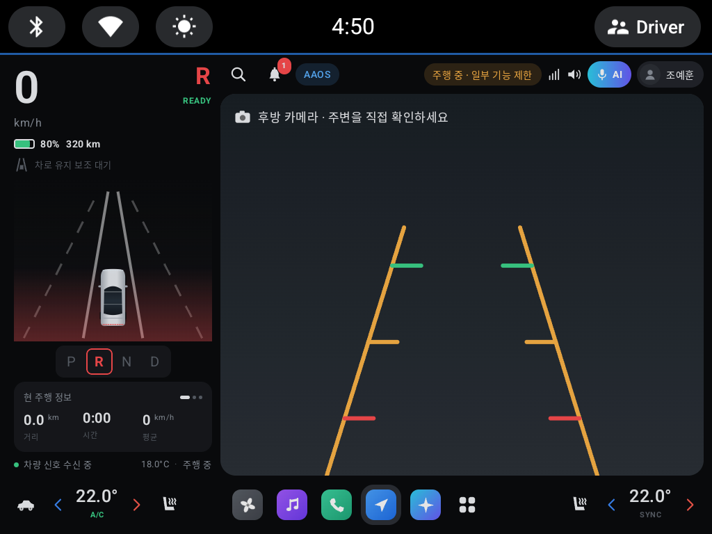
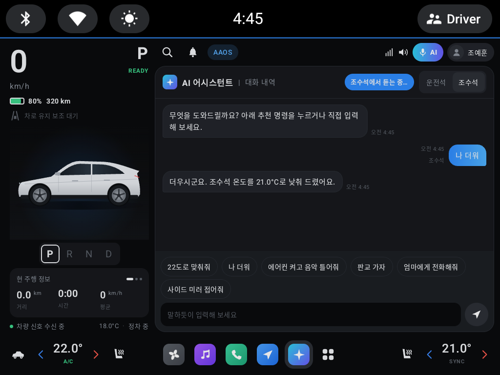

AAOS 에뮬레이터
CarService와 에뮬레이터의 VHAL(가상 차량 값)을 거칩니다. 신호를 넣고 화면을 보는 방향과, 화면을 누르고 신호를 읽는 방향을 모두 테스트합니다.
결과통과 127, 건너뜀 1, 알려진 결함 1
시간9분 45초
차량 서비스CarPropertyManager
한계실차, HIL, CAN 장비는 쓰지 않았습니다. VHAL은 에뮬레이터의 가상 값이고, CAN과 원격 전원은 PC 안의 모의 환경입니다.
요구 역량
채용 공고의 항목마다 이 프로젝트에서 한 일과 근거입니다. 항목을 누르면 근거가 되는 테스트 결과나 기록으로 이동합니다.
구조
테스트 코드에는 확인할 내용만 적고, 화면을 찾고 누르는 일은 화면 객체가, 신호를 넣고 읽는 일은 차량 어댑터가 합니다. 기기마다 다른 점은 어댑터 안에서 처리합니다.
기기
기기 종류는 자동으로 판별합니다. 기기에 CarService가 있으면 VHAL을, 없으면 앱 안의 Mock 차량 서비스를 씁니다. 두 기기는 병렬로 돌립니다.
CarService와 에뮬레이터의 VHAL(가상 차량 값)을 거칩니다. 신호를 넣고 화면을 보는 방향과, 화면을 누르고 신호를 읽는 방향을 모두 테스트합니다.
화웨이 태블릿에서는 앱 안의 Mock 차량 서비스를 씁니다. AAOS 전용 테스트는 건너뜁니다. 터치 지연, 백그라운드 강제 종료 같은 실기기 문제는 이 기기에서 나왔습니다.
두 기기를 같은 시각에 병렬로 시작해 끝까지 10분 16초 걸렸습니다. 차례로 돌렸다면 약 20분 0초입니다.
화면
Kotlin과 Compose로 만든 가상 IVI 앱입니다. 왼쪽 주행 정보 패널, 위쪽 상태 바, 오른쪽 앱 영역, 아래쪽 공조 바로 나뉩니다. 공조와 도어 잠금, 주행 정보는 차량 신호와 연결돼 있습니다.


온도, A/C, FULL(최대 냉방), AUTO, 풍량, 김서림, 좌석 열선을 CarProperty 신호로 읽고 씁니다. 범위 끝과 범위 밖 값도 확인합니다.
공조 테스트 결과



진행 상황
Test Bench REST API와 원격 전원 제어, 가상 CAN 버스와 VHAL 게이트웨이, 요구사항 추적표를 붙였습니다(PC 안의 모의 환경). 경계값 테스트를 더해 온도 버튼 결함 1건을 찾아 고쳤고, 두 기기에서 전체를 5회 반복해 안정성을 쟀습니다.
공조, 최대 냉방(FULL), 도어 잠금을 VHAL 신호에 연결하고 양방향 E2E를 더했습니다. 영상 화면은 직접 찍은 블랙박스 영상을 재생하고, 테스트마다 끝난 화면을 남깁니다.
양산 IVI 공개 자료의 3영역 구조를 참고해 분할 화면, 아래 공조 바, AI 어시스턴트, 알림 센터를 넣었습니다.
내비게이션, 라디오, 전화, 설정, 후방 카메라, 음성 명령을 더했습니다.
양산 IVI 화면 구조를 참고해 디자인을 바꾸고, 회귀 테스트에서 찾은 결함 3건을 고쳤습니다.
재시도와 flaky 판정, 격리, 통계를 만들고 두 기기 병렬 실행을 붙였습니다. GitHub Actions는 빌드와 단위 테스트를 돌리고, E2E job은 작성만 해 두었습니다.
VHAL 값 주입과 Appium 연결을 먼저 확인하고, Compose로 앱을 만든 뒤 기기 어댑터와 화면 객체를 갖췄습니다.
실행
# ivi-tests 폴더에서 python -m venv .venv .venv\Scripts\python -m pip install -r requirements.txt # 빌드 게이트 (smoke) .venv\Scripts\python -m pytest -m smoke # 두 기기 병렬, 실패하면 한 번 더 .venv\Scripts\python tools\run_bench.py -m "smoke or sanity" --reruns 1